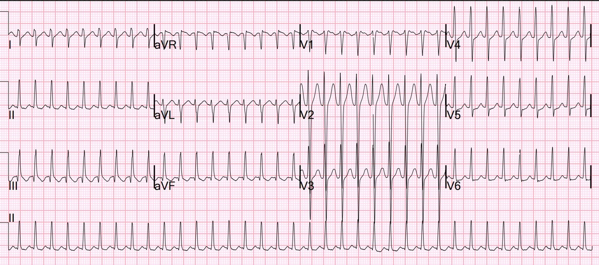
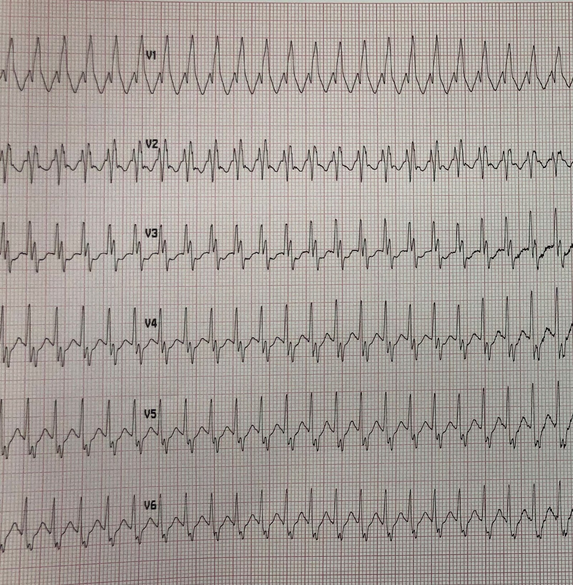
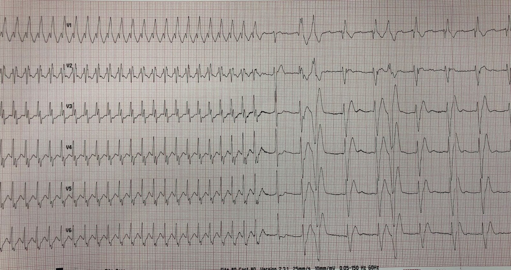
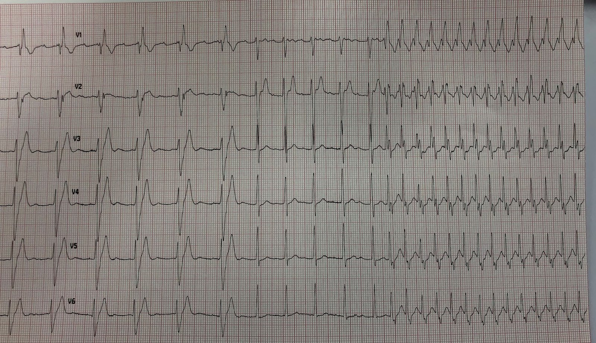
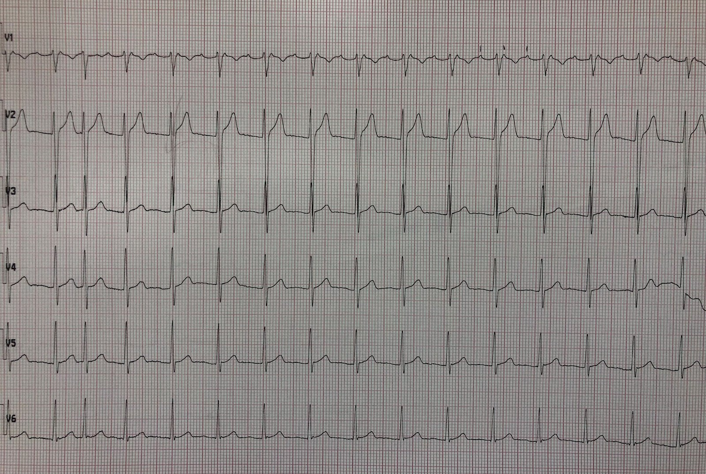
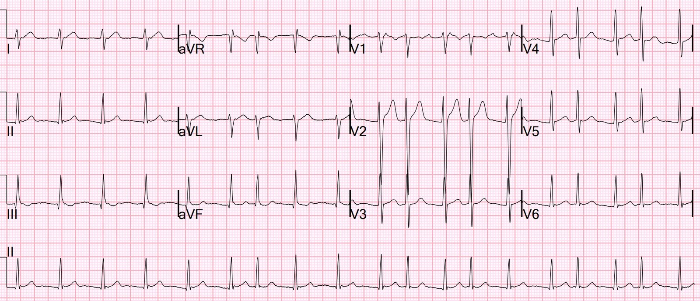
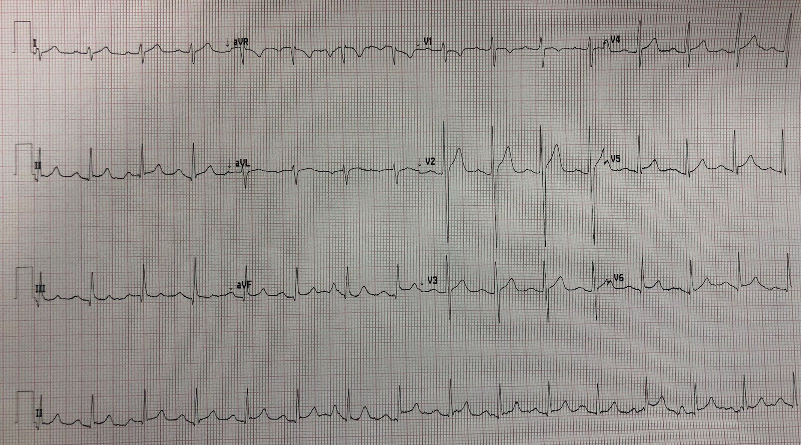
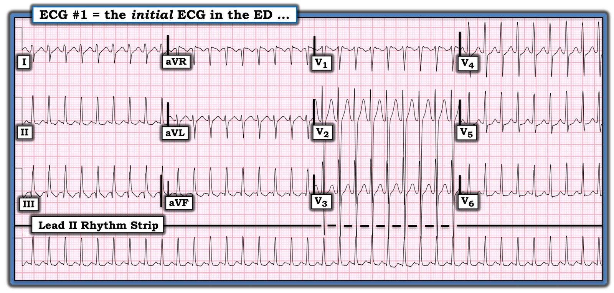
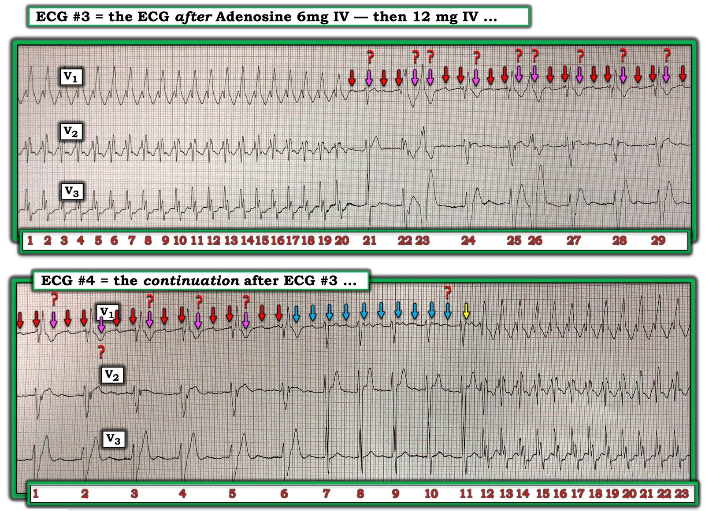
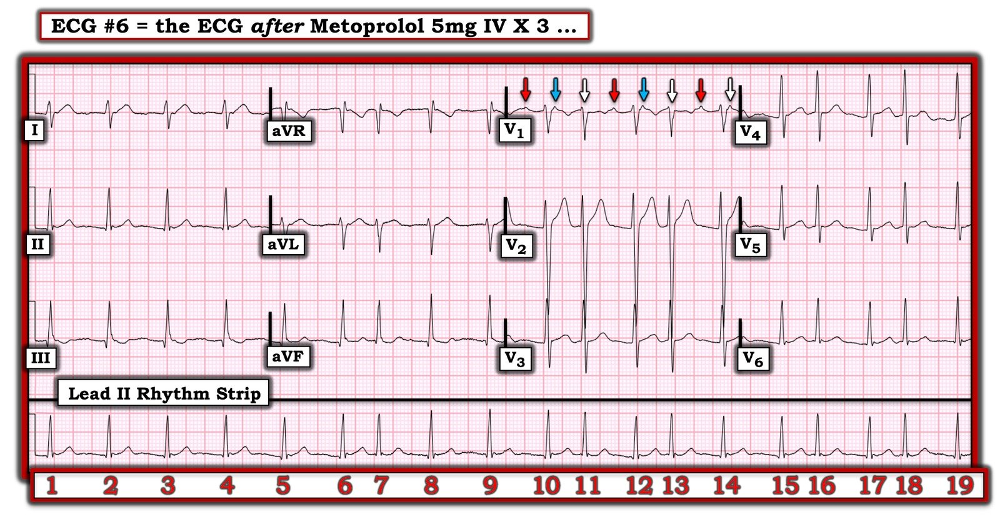

23/08/2022 — Nhịp nhanh QRS hẹp rất nhanh
Bản dịch tiếng Việt của bài "Very fast narrow complex tachycardia" – Dr. Smith’s ECG Blog. Giữ nguyên toàn bộ 11 hình ảnh của bản gốc.
Một bệnh nhân 50 mấy tuổi có tiền sử hồi hộp đánh trống ngực, đau ngực và EF 40% (chưa rõ nguyên nhân) đến viện vì đau ngực.
Huyết áp, tưới máu và tình trạng tri giác bình thường. Bệnh nhân trông dễ chịu.
Đây là điện tâm đồ đầu tiên của anh ấy tại khoa cấp cứu (ED):


Nhịp nhanh QRS hẹp với tần số 217
Đã thử nghiệm pháp Valsalva cải biên (Modified Valsalva) nhưng không thành công.
Sau đó cho 6 mg adenosine. Nhịp bị gián đoạn 2 giây, rồi ghi được dải nhịp này:


Giờ đây là phức bộ rộng, với hình ảnh RBBB.
Không rõ vì lý do gì, nhánh phải không còn tái cực kịp cho nhát kế tiếp. Nó đang trong thời kỳ trơ. Vì vậy giờ đây có RBBB liên quan tần số, mặc dù trước đó, ở cùng tần số, dẫn truyền vẫn bình thường.
Các khoảng RR ~275 ms, tương ứng tần số tim = 218 (= tần số tim ban đầu)
Sau đó cho 12 mg adenosine.
Đây là nửa đầu của dải nhịp sau liều 12 mg:


Đây là nửa sau:


Như bạn thấy, lúc đầu tần số thất chậm lại rồi sau đó lại tăng nhanh trở lại.
Nếu nhìn kỹ chuyển đạo V1, bạn có thể thấy hoạt động nhĩ suốt dải nhịp, với tần số rất gần với tần số thất nhanh.
Đây không phải sóng cuồng nhĩ – sóng cuồng nhĩ sẽ lớn hơn nhiều (tức là “vòng lớn – macro”); các sóng này quá nhỏ. Đây là nhịp nhanh nhĩ vòng nhỏ (micro).
Sơ lược về nhịp nhanh nhĩ
–Cuồng nhĩ là một nhịp nhanh “vòng lớn” (“Macro”), với đường dẫn truyền sử dụng toàn bộ nhĩ phải và do đó có các sóng cuồng nhĩ lớn, rất dễ thấy.
–Cuồng nhĩ cũng là một nhịp nhanh nhĩ vào lại. Vì vậy nó là một “nhịp nhanh vào lại vòng lớn” (“Macro Re-entrant Tachycardia”)
—Nhịp nhanh nhĩ vòng nhỏ (micro) diễn ra ở một vùng rất khu trú của tâm nhĩ và biểu hiện trên điện tâm đồ 12 chuyển đạo bằng hoạt động nhĩ có biên độ và thời gian nhỏ hơn nhiều so với cuồng nhĩ.
–Nhịp nhanh nhĩ vòng nhỏ có thể là do vào lại hoặc do tự động tính.
–Các nhịp nhanh do tự động tính, kể cả nhịp nhanh nhĩ, không đáp ứng với adenosine lẫn sốc điện.
–Mọi nhịp nhanh vào lại, dù vòng lớn (cuồng nhĩ) hay vòng nhỏ, đều có khả năng đáp ứng với sốc điện chuyển nhịp.
–Trong số các nhịp nhanh nhĩ vào lại vòng nhỏ, có loại đáp ứng với adenosine, có loại không.
–Khi bạn điều trị một SVT bằng adenosine và nó chuyển nhịp, bạn không thể chắc chắn đó là AVNRT — đó có thể là một nhịp nhanh nhĩ vào lại vòng nhỏ có đáp ứng với adenosine!
–Với bất kỳ nhịp nhanh nhĩ nào, tần số thất đều có thể giảm được bằng thuốc ức chế nút AV như thuốc chẹn beta hoặc thuốc chẹn kênh calci.
Quay lại ca bệnh của chúng ta
Nhịp nhanh nhĩ này không phải vòng lớn; nó là vòng nhỏ. Nhịp này dường như không đáp ứng với adenosine. Ngay khi adenosine (có thời gian bán thải ngắn) được chuyển hóa hết, nút AV lại có thể dẫn truyền và tần số thất lại nhanh trở lại.
Nhưng ở tần số nhĩ rất nhanh như thế này, nhịp nhanh nhĩ nhiều khả năng là do vào lại và lẽ ra phải đáp ứng với sốc điện.
Nhiều nút AV không thể dẫn truyền nhanh đến vậy, và nếu không dẫn được, ta sẽ thấy dẫn truyền 2:1 với tần số tim khoảng 109. Nút AV này dẫn truyền rất nhanh.
Cũng như với cuồng nhĩ hoặc rung nhĩ, ta có thể làm chậm đáp ứng thất bằng một thuốc ức chế nút AV có tác dụng kéo dài hơn adenosine, chẳng hạn thuốc chẹn kênh calci hoặc thuốc chẹn beta.
Dĩ nhiên, ta cũng có thể thử ngay sốc điện để xem có chuyển được nhịp nhanh nhĩ này không (sốc điện hẳn sẽ thành công nếu đây là cơ chế vào lại). Sốc điện rất có khả năng hiệu quả.
Bệnh nhân hơi ngần ngại với việc sốc điện chuyển nhịp, nên chúng tôi cho metoprolol 5 mg tĩnh mạch mỗi 5 phút x 3 lần (tổng liều = 15 mg)
Đây là dải nhịp điện tâm đồ của anh ấy sau metoprolol:


Phần lớn là dẫn truyền 2:1, có lúc dẫn truyền 1:1.
Ở đây bạn có thể thấy chỗ tôi đã đánh dấu hoạt động nhĩ ở chuyển đạo V1.
Và một điện tâm đồ 12 chuyển đạo:


Các bản ghi này cho thấy phần lớn là dẫn truyền 2:1, với một số nhát dẫn truyền 1:1
Sau đó, bệnh nhân đồng ý sốc điện chuyển nhịp:


Nhịp xoang bình thường
Vì sao bệnh nhân có EF thấp?
–Có lẽ anh ấy đã bị các cơn nhịp nhanh thường xuyên đến mức mắc bệnh cơ tim do nhịp nhanh (tachycardia cardiomyopathy).
Bệnh nhân được chụp mạch vành, kết quả bình thường.
Sau đó, trong thời gian nằm viện, anh ấy lại tái phát nhịp nhanh nhĩ.
2 ngày sau, bệnh nhân được thăm dò điện sinh lý (EP) kèm triệt đốt.

===================================
BÌNH LUẬN CỦA TÔI, bởi KEN GRAUER, MD (23/8/2022):
===================================
Tôi thấy ca hôm nay thật cuốn hút, với nhiều bài học quan trọng. Tôi hoàn toàn thừa nhận rằng sau khi nghiền ngẫm những chi tiết phức tạp của 7 bản ghi mà Dr. Smith trình bày ở trên — tôi có nhiều câu hỏi hơn là câu trả lời. Dù vậy, bất chấp nhiều điều chưa chắc chắn — các bài học thì rõ ràng! — và cách xử trí xuất sắc của Dr. Smith đã giúp chuyển thành công về nhịp xoang.
- Tôi tập trung bình luận vào 4 trong số 7 bản ghi mà Dr. Smith trình bày ở trên. Cho rõ ràng — tôi đã đánh số các bản ghi theo thứ tự chúng được trình bày ở trên.
Bệnh nhân trong ca hôm nay đến viện vì đau ngực — với điện tâm đồ trong Hình 1. Bệnh nhân ổn định huyết động trong lúc có nhịp này.
- Ngay cả trước khi bàn đến nhịp — điểm thứ 1 cần nêu là bệnh nhân bị rối loạn nhịp nhanh thường đến viện với cảm giác khó chịu ở ngực. NẾU cơn đau ngực của bệnh nhân hết ngay khi chuyển về nhịp xoang và điện tâm đồ sau chuyển nhịp không có thay đổi ST-T cấp — thì thường bạn có thể yên tâm rằng đau ngực chỉ là hậu quả của tần số tim nhanh, và không phải là một hội chứng tim cấp.


SUY NGHĨ CỦA TÔI về điện tâm đồ ban đầu:
Điện tâm đồ trong Hình 1 cho thấy một nhịp nhanh phức bộ hẹp đều — do đó là một SVT (nhịp nhanh trên thất – SupraVentricular Tachycardia) đều. Tần số tim khoảng ~215/phút. Sự hiện diện của hoạt động nhĩ là không chắc chắn.
- Mặc dù có một sóng lệch dương ngay sau điểm giữa khoảng R-R ở chuyển đạo II — tần số tim ~215/phút là quá nhanh để đó có thể là sóng P xoang.
- Cả chuyển đạo V1 và aVR đều biểu hiện thứ có thể là một giả r’ (pseudo-r’) tạo khía ở phần tận cùng QRS ở các chuyển đạo này. Dẫn truyền nhĩ ngược dòng trong AVNRT thường trông như thế này ở 2 chuyển đạo đó. Dù vậy — khi ta thực sự thấy hoạt động nhĩ ngược dòng trong AVNRT — nó thường tạo một khía âm ở phần tận cùng QRS ở các chuyển đạo dưới, và điều đó không thấy trong Hình 1.
- Điều cốt lõi về hoạt động nhĩ trong Hình 1 — tôi không thể chắc chắn liệu có hay không có một dạng hoạt động nhĩ nào đó.
Do đó — nhận định của tôi về điện tâm đồ trong Hình 1 là có một nhịp SVT đều ở tần số ~215/phút, không có dấu hiệu rõ ràng của hoạt động nhĩ.
- Chúng tôi đã nhiều lần ôn lại chẩn đoán phân biệt của các nhịp SVT đều trên Dr. Smith’s ECG Blog (Mời xem bàn luận của Dr. Smith và phần Bình luận của tôi ở cuối trang của bài ngày 6 tháng Ba năm 2020 để ôn lại các khái niệm chính).
- Nói một cách thực tế — các chẩn đoán phân biệt chính của một nhịp SVT đều mà không thấy rõ sóng P xoang (tức là sóng P dương rõ ràng ở chuyển đạo II) gồm: i) Nhịp nhanh xoang (NẾU có khả năng sóng P xoang đang ẩn trong ST-T của nhát đi trước); ii) Một SVT vào lại (hoặc là AVNRT nếu vòng vào lại nằm gọn bên trong nút AV — hoặc AVRT nếu có sự tham gia của một AP [đường phụ – Accessory Pathway] nằm ngoài nút AV); iii) Nhịp nhanh nhĩ; hoặc iv) Cuồng nhĩ với dẫn truyền AV 2:1.
- Tần số tim có thể giúp ích! Nói ngắn gọn — i) NẾU tần số tim ở người lớn ≥170/phút — thì cả nhịp nhanh xoang lẫn cuồng nhĩ (AFlutter) đều trở nên ít khả năng hơn (tức là không phải là không thể! — mà chỉ là ít khả năng hơn); — NHƯNG — ii) NẾU tần số của một nhịp SVT đều ở người lớn gần với ~150/phút (tức là ~140-160/phút) — thì bất kỳ thực thể nào trong 4 thực thể trên đều phải được xem xét trong chẩn đoán phân biệt!
Áp dụng điều này cho nhịp trong Hình 1:
- Như đã nêu ở trên — tần số tim ~215/phút trong điện tâm đồ #1 khiến nhịp nhanh xoang ở người lớn cực kỳ khó xảy ra.
- Cuồng nhĩ (AFlutter) chưa điều trị cũng cực kỳ khó xảy ra — vì tần số ~215/phút là quá nhanh đối với dẫn truyền AV 2:1 (vì như vậy sẽ cần tần số cuồng nhĩ 215 X 2 = 430/phút — nhanh hơn nhiều so với tần số cuồng nhĩ thông thường ~300/phút) — và tần số ~215/phút lại chậm hơn so với mức người ta sẽ chờ đợi nếu cuồng nhĩ dẫn truyền 1:1.
- Như vậy chỉ còn lại một SVT vào lại hoặc nhịp nhanh nhĩ (ATach) là những khả năng cao nhất cho nhịp trong Hình 1.
“Tin tốt” về điều trị:
- Dù việc lần lượt xem xét chẩn đoán phân biệt là hữu ích — xử trí ban đầu các nhịp SVT đều không phải xoang tại khoa cấp cứu là rất giống nhau.
- Trong quá trình điều trị như vậy — thường bạn sẽ đi đến chẩn đoán nhịp đúng.
Ca bệnh tiếp diễn:
Trong ca hôm nay — nghiệm pháp Valsalva không thành công. Sau đó cho adenosine (lúc đầu 6 mg tĩnh mạch — sau đó 12 mg tĩnh mạch). Kết quả được thấy trong 2 dải nhịp ở Hình 2.
- LƯU Ý: Để dễ quan sát các đặc điểm chính — tôi chỉ trình bày chuyển đạo V1,V2,V3 cho 2 dải nhịp trong Hình 2.


Đáp ứng với Adenosine:
Sau khi gần như đã loại trừ nhịp nhanh xoang và cuồng nhĩ (vì tần số rất nhanh, ~215/phút) — chẩn đoán phân biệt cho nhịp SVT đều của ca hôm nay thu hẹp lại còn một dạng nào đó của SVT vào lại (tức là AVNRT hoặc AVRT xuôi chiều) hoặc ATach.
- Adenosine hầu như luôn có hiệu quả trong việc chuyển nhịp một SVT vào lại.
- Như Dr. Smith đã bàn ở trên — Adenosine có thể chuyển được hoặc không chuyển được ATach, tùy theo cơ chế của ATach.
- Phần lớn các trường hợp, ngay cả khi Adenosine không chuyển được nhịp — tác dụng làm chậm đáp ứng thất với SVT của thuốc này (ít nhất là trong khoảng thời gian tác dụng ngắn ngủi của Adenosine) — sẽ cho phép nhìn thấy hoạt động nhĩ nền, qua đó bộc lộ cơ chế của nhịp.
Điểm độc đáo của ca hôm nay là ngay sau khi tiêm Adenosine — đã xuất hiện dẫn truyền kiểu RBBB! (thấy ở các nhát #1-20 trên điện tâm đồ #3).
- Việc 2 liều Adenosine không chuyển được nhịp SVT đều trong ca hôm nay gợi ý rằng căn nguyên nhiều khả năng là ATach.
- Theo hiểu biết của tôi qua việc điểm lại y văn, việc Adenosine gây ra RBBB trong quá trình điều trị là hiếm gặp (vì Adenosine nhìn chung có rất ít hoặc không có tác dụng lên dẫn truyền qua cơ thất hay trong hệ thống nhánh bó His).
- Hình dạng rsR’ điển hình ở chuyển đạo V1 của các nhát #1 đến 20 trên điện tâm đồ #3, cùng với việc tần số của nhịp trong 20 nhát này giống hệt tần số ~215/phút thấy ở Hình 1 — gợi ý mạnh mẽ rằng đây đúng là Adenosine đã gây ra một hình ảnh dẫn truyền RBBB trên thất (và không phải VT).
- Mặc dù dường như có phần đóng góp của BBB “liên quan tần số” — việc tần số tim trước và sau khi khởi phát dẫn truyền RBBB vẫn giữ nguyên gợi ý rằng một cơ chế khác nào đó chịu trách nhiệm cho sự chuyển sang dẫn truyền RBBB. Phải chăng ở bệnh nhân hôm nay, Adenosine đã tác động phần nào lên mô dẫn truyền trong hệ thống nhánh bó His, và tác động này xảy ra trước khi thuốc kịp tác động lên mô nút AV?
- Nhát #21 trên điện tâm đồ #3 được dẫn truyền bình thường. Phải chăng khoảng ngưng ngắn trước nhát này đủ để dẫn truyền nhánh bó trở về bình thường?
- Các nhát #23 và 26 trông giống PVC (hình dạng rất khác biệt). Nhưng còn các nhát #22, 24,25,27,28,29 thì sao?
Hãy xem điện tâm đồ #4. Lưu ý rằng có 3 hình dạng QRS khác nhau trên dải nhịp này!
- Thách thức khi đọc điện tâm đồ #3 và #4 — là chúng ta chỉ thấy hoạt động nhĩ từng lúc (và thật ra chúng ta chỉ thấy hoạt động nhĩ ở chuyển đạo V1).
- Tôi nghĩ Dr. Smith đúng khi cho rằng hoạt động nhĩ vẫn tiếp diễn suốt cả hai dải nhịp — nhưng thật sự chúng ta không thể theo dõi hoạt động nhĩ này một cách liên tục (tức là các mũi tên ĐỎ chỉ những sóng P đều đặn mà chúng ta có thể thấy ở nửa thứ 2 của điện tâm đồ #3 — và ở nửa thứ 1 của điện tâm đồ #4 — nhưng thật sự không có “khía tố cáo” nào bên dưới các mũi tên HỒNG — vậy liệu chúng ta có thực sự chắc chắn rằng hoạt động nhĩ vẫn đều đặn suốt các bản ghi này không?).
- Các mũi tên XANH LAM trên điện tâm đồ #4 gợi ý hoạt động nhĩ đều đặn vẫn tiếp diễn — NHƯNG — lưu ý rằng trong khi khoảng PR của các sóng P ở mũi tên ĐỎ có vẻ hằng định — khoảng PR này khác với khoảng PR của sóng P ở mũi-tên-XANH-LAM-cách-một dường như được dẫn truyền.
- Cuối cùng — sóng P ở mũi tên VÀNG dường như được dẫn truyền — và khởi đầu sự trở lại của dẫn truyền 1:1 với cùng hình dạng RBBB đã thấy ở đầu điện tâm đồ #3.
ĐIỀU CỐT LÕI: Ngoài 2 PVC (tức là các nhát #23 và 26 trên điện tâm đồ #3) — tôi nghĩ tất cả các nhát trong Hình 2 đều là nhát trên thất. Điện tâm đồ #3 bắt đầu bằng dẫn truyền RBBB do Adenosine gây ra — cho đến khi cuối cùng, tác dụng của Adenosine bắt đầu tác động lên nút AV từ nhát #22.
- Phải chăng tác dụng bất thường của Adenosine ở bệnh nhân hôm nay — tức là có tác động lên cả mô nhánh bó His lẫn mô nút AV — giải thích cho blốc AV 3:1 với hình dạng QRS khác (rộng hơn) ở cuối điện tâm đồ #3 và đầu điện tâm đồ #4?
- Tiếp theo là dẫn truyền QRS bình thường với blốc 2:1 trong giai đoạn có các sóng P ở mũi tên XANH LAM.
- Điện tâm đồ #4 sau đó kết thúc với sóng P VÀNG khởi đầu dẫn truyền 1:1 với hình dạng RBBB ban đầu cho các nhát #12 đến 23 trên điện tâm đồ #4.
Sau đó dùng thêm Metoprolol (3 liều 5 mg tĩnh mạch trong 10 phút) — và ghi điện tâm đồ #6 (Hình 3):


Đáp ứng với Metoprolol tĩnh mạch:
Lưu ý rằng trên điện tâm đồ #6, hoạt động nhĩ chỉ thấy được ở chuyển đạo V1 (các mũi tên màu ở chuyển đạo này). Rất dễ bỏ sót sự hiện diện của sóng P nếu bạn không xem xét kỹ chuyển đạo V1!
- Lưu ý rằng tần số thất chung đã chậm lại. Ngoài ra — đến lúc này tác dụng của Adenosine đã hết. Kết quả là — phức bộ QRS hẹp!
- Chúng ta đã suy luận được rằng nhịp trong ca hôm nay là ATach.
- Lưu ý rằng có nhịp theo nhóm (group beating) ở một số đoạn của dải nhịp chuyển đạo II dài trong Hình 3 (tức là một số nhát nhịp đôi rải rác trên dải nhịp dài).
- ĐIỂM THEN CHỐT (PEARL) #1: ATach thường biểu hiện dẫn truyền Wenckebach. Vì chúng ta không thấy hoạt động nhĩ ở chuyển đạo II — dải nhịp dài ít giúp ích cho chúng ta trong việc đánh giá cơ chế của nhịp này. Nhưng 5 nhát mà chúng ta thấy được ở chuyển đạo V1 lại mang tính gợi mở — vì có dẫn truyền Wenckebach 3:2 (Mỗi chu kỳ bắt đầu với khoảng PR ngắn nhất [mũi tên ĐỎ] — tiếp theo là khoảng PR dài dần ra [mũi tên XANH LAM] — rồi đến nhát bị rớt [mũi tên TRẮNG] để hoàn tất chu kỳ Wenckebach).
- ĐIỂM THEN CHỐT (PEARL) #2: Một đặc điểm của ATach — là hình dạng sóng P của ổ nhĩ thường khá khác so với hình dạng sóng P xoang. Lưu ý trong bản ghi cuối cùng được trình bày ở trên (sau sốc điện chuyển nhịp) — rằng giờ đây đã thấy sóng P xoang dương bình thường ở chuyển đạo II.
Những bài học MẤU CHỐT cần rút ra:
Hướng xử trí mà Dr. Smith trình bày ở trên là phù hợp và hiệu quả! Như Dr. Smith đã nêu — Adenosine thường là lựa chọn tối ưu tại khoa cấp cứu cho xử trí ban đầu nhịp SVT đều.
- Adenosine đã làm chậm nhịp một cách hiệu quả trong ca hôm nay — qua đó cho phép xác định đúng căn nguyên ( = ATach).
- Dù vậy — Adenosine đã không chuyển được nhịp về nhịp xoang.
- Có vẻ như Adenosine đã tạo ra tác dụng bất thường là gây ra dẫn truyền RBBB (với tần số giống hệt nhịp SVT QRS hẹp ban đầu). Cần biết rằng tác dụng phụ này có thể gặp với Adenosine — cũng như cần nhận ra rằng việc tần số tim vẫn giữ nguyên ở mức 215/phút về cơ bản đã loại trừ VT là nguyên nhân gây giãn rộng QRS.
- Trong quá trình đó (trong 1-2 phút Adenosine tĩnh mạch còn tác dụng) — đã thấy nhiều loại rối loạn nhịp bất thường (với các hình dạng QRS khác nhau và khoảng PR thay đổi). Dù sự pha trộn các rối loạn nhịp này hấp dẫn đến đâu — không cần phân tích rối loạn nhịp chuyên sâu trong thời gian Adenosine còn tác dụng vì: i) các rối loạn nhịp do Adenosine gây ra thường phức tạp và “không theo sách giáo khoa”; và, ii) các rối loạn nhịp do Adenosine gây ra hầu như luôn tự hết khi thuốc hết tác dụng.
- Khi nhịp SVT vẫn tồn tại trong ca hôm nay dù đã dùng Adenosine — chúng ta có thể yên tâm khi biết rằng một thuốc chống loạn nhịp khác và/hoặc sốc điện chuyển nhịp hầu như luôn có hiệu quả.